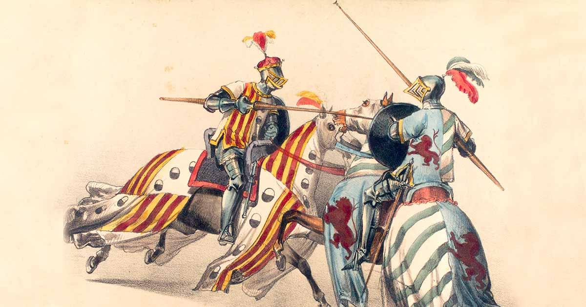
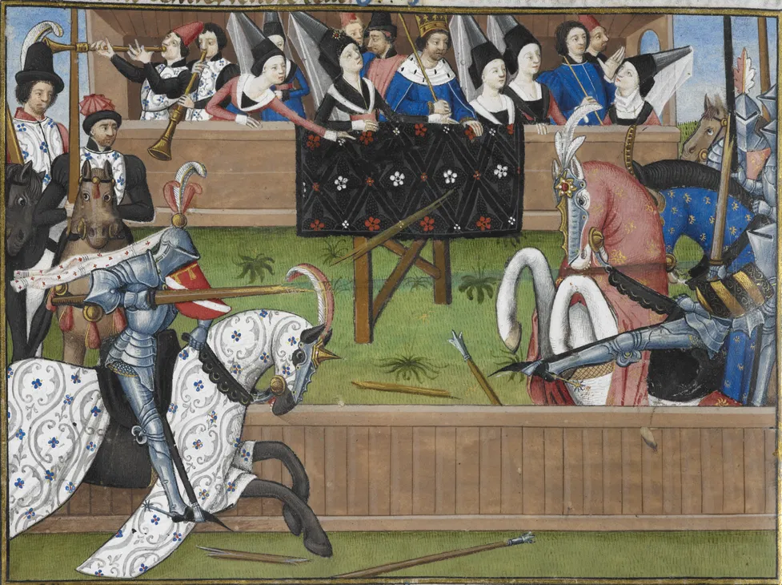
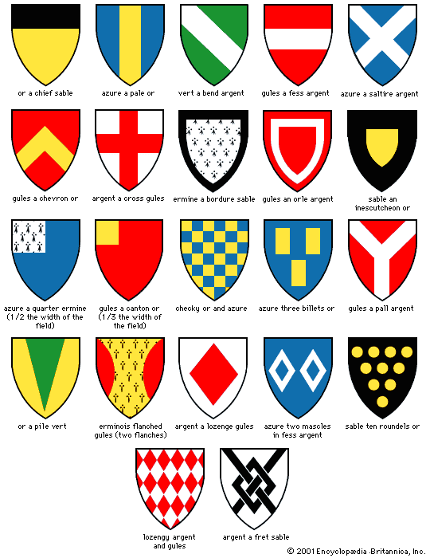
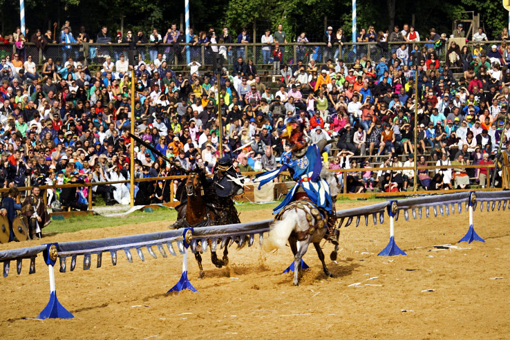

Budaya Jousting pada Abad Pertengahan
1. Jousting sebagai Budaya Bangsawan
Jousting merupakan salah satu bentuk hiburan dan ritual budaya yang sangat erat kaitannya dengan kehidupan bangsawan Eropa pada Abad Pertengahan. Turnamen jousting tidak dapat diikuti oleh masyarakat biasa, melainkan hanya oleh kaum ksatria yang berasal dari keluarga ningrat. Keikutsertaan dalam jousting menjadi simbol status sosial, kekuasaan, dan kehormatan.
2. Nilai Kehormatan dan Kesatria
Budaya jousting sangat menjunjung tinggi nilai kehormatan (honor) dan kode etik kesatria yang dikenal sebagai chivalry. Seorang ksatria diwajibkan bertarung secara adil, menghormati lawan, serta menunjukkan keberanian dan pengendalian diri. Pelanggaran terhadap aturan tidak hanya dianggap curang, tetapi juga mencoreng reputasi keluarga ksatria tersebut.
3. Peran Jousting dalam Kehidupan Sosial
Selain sebagai olahraga, jousting berfungsi sebagai acara sosial besar yang melibatkan raja, bangsawan, dan rakyat. Turnamen sering diadakan untuk merayakan penobatan raja, pernikahan kerajaan, atau perjanjian politik. Melalui jousting, penguasa dapat menunjukkan kekuatan militernya serta mempererat hubungan antar wilayah.
4. Busana, Simbol, dan Identitas
Setiap ksatria mengenakan warna dan lambang khusus yang merepresentasikan identitas keluarga mereka. Lambang ini dikenal sebagai heraldry dan digunakan pada perisai, baju zirah, serta bendera. Warna dan simbol tersebut memiliki makna tertentu, seperti keberanian, kesetiaan, atau kekuasaan.
5. Pengaruh Jousting terhadap Budaya Modern
Hingga saat ini, jousting masih dikenang sebagai bagian penting dari warisan budaya Eropa. Tradisi ini dihidupkan kembali melalui festival abad pertengahan, pertunjukan sejarah, serta kompetisi rekonstruksi modern. Jousting juga banyak muncul dalam film, sastra, dan permainan digital sebagai simbol romantisme dan keberanian ksatria.
